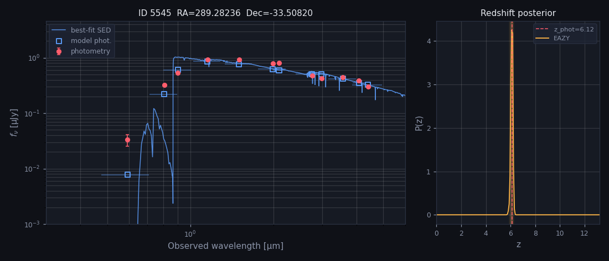

Target 01 · matched HST source
VENUS 5545 ↔ RELICS 222
RA 19:17:07.77 (289.282356°)·Dec -33:30:29.52 (-33.508200°)
- JWST VENUS
- z = 6.122 [5.913 – 6.254] (95%)
- HST RELICS
- z = 5.750 [5.620 – 5.900] (95%) stellarity 0.88 · match 0.033″
01
RELICS HST color imageACS + IR color stamp · HST source 222

02–03
RELICS BPZ SED + P(z)HST photometry, BPZ model, and redshift probability


04
VENUS EAZY SED + P(z)VENUS v0.2 source 5545 · direct EAZY SED and posterior

Open VENUS source page directly ↗Plot served locally when available; click to inspect interactive live session on VENUS Hub.